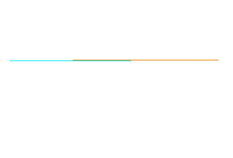
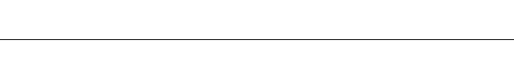

圣玛利亚医院
树山东专业典范
圣玛利亚医院
树山东专业典范
山东省圣玛利亚医院
医院简介 Hospital intorduction 树山东专业典范 立华夏医疗品牌
济南圣玛利亚医院由山东中医药大学和香港圣玛利亚医院管理集团联合成立，经卫生行政主管部门批准， 是济南首家国际化妇产医院。按照国际（妇产诊疗与服务）标准(JCI)承建，是孕前、孕中、待产、分娩、 产后康复及月子中心为一体的高档专业医院。专注于为客户提供专业化、国际化、家庭化、人性化、 舒适化的诊疗服务。
医疗特色

在这里享受尊贵
医院倡导“人本位”国际医疗服务模式的产科医院，从孕前指导（优生优育）、孕期营养、饮食、运动、体重增 长进行健康管理和干预，孕期每月的专家会诊产前38周的专家评估会、产后的恢复评估以及儿童0-6岁的健康查体、 档案建立。
服务优势
收获关爱 享受健康
高度关注客户，满足其在情感、心理、功能等整体方面带来的个性化需求和改变。
专业医疗团队提供全方位的贴心呵护，微笑和舒适渗透到每一个细节。
诊疗设备
巨资引入 国际同步
四维彩超是目前世界上最先进的彩色超声设备，被誉为“神奇彩超”，是筛查胎儿畸形的尖端设备，能够多方位、 多角度地观察宫内胎儿的生长发育情况，为早期诊断胎儿先天性体表畸形和先天性心脏疾病提供准确的科学依据。
环境优势
打开窗是风景 关上窗是享受
医院充分发挥根植于南国的地理优势，先后投入近千万元，实施园林化改造，建成了一座与公园融为一体的现代 化医学城。医院优美的环境赢得了中外友人的一致好评。
医院使命 hospital Mission

每一个孩子的诞生都是一位天使的降临。 为您和天使服务是我们的荣耀，为了这份荣耀我们必将尽心尽责。 上帝创造了世界，我们一起成就未来。
专家团队 Team of experts
Design.ss 主任医师，教授，知名妇产专家
影像学研究所泌尿妇产系统影像研究室主任，超声医学工程学会妇产科超声专业委员会委员、超声医学工程学 会副会长、小器官分会主任委员、生物医学工程学会超声专业委员会副主任委员、山东省产科诊断技术专家组成 员、女医师协会第二届委员会常务理事。
院长致辞
我院始终践行着“人本位”医疗模式，在整个医疗保健过程中高度关注宾客感受，尽量满足和缓解医疗保健过 程给宾客在情感、心理功能等方面带来的个性化需求和改变。同时，我们倡导3H服务理念，将医院(hospital)、 酒店(hotel)、家(home)融为一体，让您在圣玛丽亚享受美妙的孕产体验。
联系我们 contact us

拨打电话010-00000000